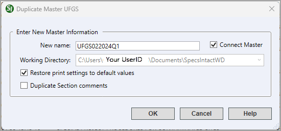
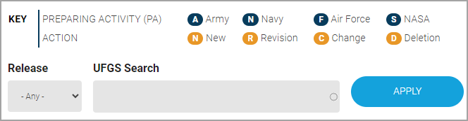
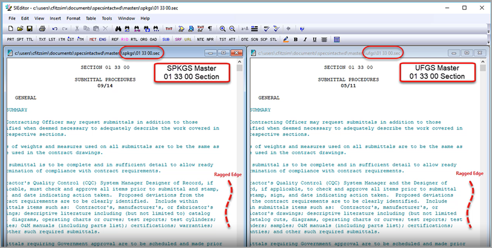

Instructions for Customizing the UFGS Master for a district Master
Getting Started
For the foundation of the custom UFGS Master, you will need to ensure you have the latest UFGS Master and the corresponding UFGS Changes and Revisions List.
Step 1: Duplicate The UFGS Master
- In the SpecsIntact Explorer's Available Projects panel, right-click the UFGS Master and select Duplicate Master UFGS
- On the Duplicate Master window below Enter New Master Information, enter a new name into the New name field (e.g., UFGS202401Q1, UFGSFEB2024Q1, UFGS-FEB-2025, or UFGS-022025)
- On the right of the New name field, leave Connect Master selected
- In the Working Directory field, verify the correct Working Directory is selected. If you have established multiple Working Directories, you can click the drop-down arrow to select a different Working Directory from the list
- Select Restore print settings to default values
- Deselect Duplicate Section comments
- Click OK

- When prompted to Duplicate UFGS as, click Yes
- When prompted that the Master UFGS duplicated to, click OK
Step 2: Changing the column header views
- In the SpecsIntact Explorer's Available Projects panel, under the Masters folder, select the duplicated Master (e.g., UFGS202401Q1 or UFGSFEB2024Q1)
- Select the View menu and select Columns
- On the Select Columns for Sections window, select the Preparing Activity
- Click OK
Once the process has been completed, you should reset the Columns by deselecting the Preparing Activity to avoid loading delays when displaying the Section files.
Step 3: Remove Agency-Specific Sections
The UFGS Master is a combination of unified and non-unified agency-specific Sections. Each agency is responsible for maintaining both the unified and non-unified Sections. The focus of this section is the agency's fifth-level Sections that are unique to each agency. Army-specific Sections use 10, Navy 20, and Air Force 30.
- In the SpecsIntact Explorer's Contents panel, click on the Preparing Activity column header to sort the Sections by agency
- Highlight the first Navy (NAVFAC) Section
- Scroll down until you see the last Navy (NAVFAC) Section, then press-and-hold the Shift key and select the last Navy (NAVFAC) Section
- WIth all the Navy (NAVFAC) Sections highlighted, press the Delete key
- On the Confirm Sections to Delete window, select OK
 If your District does not use the Air Force (AFCEC) Sections, then repeat steps 2 - 5 to remove the Sections.
If your District does not use the Air Force (AFCEC) Sections, then repeat steps 2 - 5 to remove the Sections.
Step 4: Tailor the Local District Master
The steps in this Section will remove the Navy (NAVFAC) agency-specific information within the District Master so the only two remaining agencies will be the Army (USACE) and Air Force (AFCEC).
- In the SpecsIntact Explorer's Available Projects panel, right-click on the custom District Master (e.g., UFGS202401Q1 or UFGSFEB2024Q1) and select Tailor Master
- On the Tailor Sections in Master... window below Tailor Options, deselect Use Revisions and select Automatically apply check/uncheck to identical Tailoring Options...
- Begin deselecting the Tailoring Options provided in the table below:
| Tailoring Options Deselected by USACE SPK | |
| Azores | NAVFAC NW |
| HAWAII | NAVFAC PAC |
| NAVFAC EURAFSWA | NAVFAC SE |
| NAVFAC FE | NAVFAC SW |
| NAVFAC HAWAII | NAVFAC WASH |
| NAVFAC HI | NAVY |
| NAVFAC LANT | NAVY ACCEPTANCE ENGINEER |
| NAVFAC MAR | NORFOLK NAVAL SHIPYARD |
| NAVFAC MARIANAS | PAC |
| NAVFAC MIDLANT | PEARL HARBOR SHIPYARD |
| NAVFAC ML | RCBEA |
 Do not solely rely on the list above, since new Tailoring Options are added regularly.
Do not solely rely on the list above, since new Tailoring Options are added regularly.
Step 5: Incorporate USACE SPKGS Local District Master
Local District Masters are developed to address specific State, County, City, and local regulations such as Air boards, Water Quality requirements, Stormwater pollution prevention, and local environmental requirements for protecting threatened and endangered local flora and fauna. Additionally, District Masters will also ensure the local base and installation requirements are addressed.
In the steps below, we are only going to highlight all the unique Sacramento District (SPKGS) Master specifications with the fifth-level .41 designation and copy them into the custom UFGS Master (e.g., UFGS202401Q1 or UFGSFEB2024Q1). There is no need to copy Section 01 33 00 Submittal Procedures Section.
- In the SpecsIntact Explorer's Available Projects panel, select the SPKGS District Master
- In the Contents panel, press-and-hold the Ctrl key to select the Division 01 - .41 Sections above the 01 33 00 Submittal Procedures Section
- With the Sections highlighted, press Ctrl+C to copy the Sections
- In the Available Projects panel, select the custom District Master (e.g., UFGS202501Q1 or UFGSFEB2024Q1)
- Press Ctrl+V to paste the Sections in the custom District Master
- When the Copy Files window appears, click Yes
- In the Contents panel, press-and-hold the Shift key to select the remaining .41 Sections below the 01 33 00 Submittal Procedures Section
- Repeat steps 3 - 7
Step 6: Generate and Resolve the Quality Assurance (QA) Report Issues
This section will address the steps for generating the Verification Reports to clean up any issues that surfaced from combining the UFGS Master with the District Master.
 If you need to familiarize yourself with correcting the Verification Reports, review the Chapter 6 eLearning modules.
If you need to familiarize yourself with correcting the Verification Reports, review the Chapter 6 eLearning modules.
Follow the steps below to process the Verification Reports.
- In the SI Explorer, select the Print/Publish button on the Toolbar
- On the Print Processing for Master window, Sections tab, verify All Sections is selected
- Select the Reports tab, below Reports verify all the Verification Reports are selected
- Click the Process Only button
 The processing may take a few minutes to process due to the number of Sections within the custom Master. At this phase of the procedure, focus on correcting the issues found in the Reference Title and Submittal Verification Reports.
The processing may take a few minutes to process due to the number of Sections within the custom Master. At this phase of the procedure, focus on correcting the issues found in the Reference Title and Submittal Verification Reports.
Step 7: Review the UFGS Changes and Revisions
Moving forward, the process is more detailed since you will be comparing the SPKGS .41 Sections with the changed UFGS Sections, which requires you to go to the Whole Building Design Guide (WBDG) UFGS Changes and Revisions page.
- On the UFGS Changes and Revisions page, scroll down until you see the Key, Release, and UFGS Search

- Below Release, click the drop-down arrow and select the latest release (e.g., Feb-2024, May-2024, etc.)
- Click the Apply button
- After you click the Apply button, click PRINT REPORT (located in the third paragraph on this page)
If the changes are minor, you will update the Sections in the SPKGS .41 Sections. However, if they are major, you will update the UFGS Sections to include the local requirements.
Step 8: Compare SPKGS and UFGS Section 01 33 00 And Incorporate Changes
This method may not detect minor changes to a word or a measurement, but it will be close. There are other methods for comparing Section files, but they provide more detail and take more time. These methods include Publishing the Sections to PDF or Word, then using the built-in comparison tools that will assist you in identifying the changes in the UFGS Sections that will require attention. Although the ragged edge method seems to be faster, these methods tend to be more accurate. It's up to you to determine what method is best for you.
Always start by comparing the two Master's 01 33 00 Submittal Procedures Sections, to locate the changes, and then incorporate the changes into the SPKGS District Master's 01 33 00 Submittal Procedures Section.
- In the SpecsIntact Explorer's Available Projects panel, select the SPKGS District Master
- In the Contents panel, double-click to open the 01 33 00 Submittal Procedures Section
- In the SI Editor, select the Open button on the Toolbar
- In the SI Editor, select the Window menu and select Tile Vertical to display the two Sections side-by-side
- Before you begin, close the Navigator in both Sections to maximize the workspace
- As you scroll down, watch the right side of each Section file using the ragged edge pattern (as illustrated below)

 When using this method, it is unnecessary to read the entire line to detect changes by only checking the words at the end to see pattern differences.
When using this method, it is unnecessary to read the entire line to detect changes by only checking the words at the end to see pattern differences.
- When the pattern visibly changes, read that line of text to find what has changed, then update the SPKGS specification
- Continue to scroll through both Sections, making the necessary changes until the end of the Section
- Once the SPKGS District Master's 01 33 00 Submittal Procedures Section has been updated, close both Sections
- In the Contents panel, select the SPKGS District Master's 01 33 00 Submittal Procedures Section
- Press Ctrl+C to copy the Section
- In the Available Projects panel, select the custom UFGS Master (e.g., UFGS202401Q1 or UFGSFEB2024Q1)
- Press Ctrl+V to paste the Section into the custom UFGS Master
 Once the custom UFGS Master's 01 33 00 Submittal Procedures Section has been overwritten with the SPKGS District Master's Section, you will see the Preparing Activity reflects CESPK.
Once the custom UFGS Master's 01 33 00 Submittal Procedures Section has been overwritten with the SPKGS District Master's Section, you will see the Preparing Activity reflects CESPK.
Step 9: Merge District References With The Custom UFGS Master's 01 42 00 Sources For Reference Publications Section
In this section, we will focus on merging the SPKGS District Master's Reference Publications into the custom UFGS Master's 01 42 00 Sources for Reference Publications Section. To simplify this process, the Sacramento District created a local District 01 42 00.13 41 Section to easily maintain the District's unique Reference Publications.
- In the SpecsIntact Explorer's Available Projects panel, select the SPKGS District Master
- In the Contents panel, double-click to open the District 01 42 00.13 41 Section
- Highlight all the Reference Publications, then press Ctrl+C or right-click and select Copy
- Close the 01 42 00.13 41 Section
- In the Available Projects panel, select the custom UFGS Master (e.g., UFGS202401Q1 or UFGSFEB2924Q1)
- In the Contents panel, double-click to open the UFGS 01 42 00 Sources for Reference Publications Section
- Navigate to PART 2 PRODUCTS
- Place your cursor between the ending </REF> and beginning <REF> tags, right-click and select Paste
- Close the UFGS 01 42 00 Sources for Reference Publications Section
- Select the SPKGS Master
- In the Contents panel, select and delete the District 01 42 00.13 41 Section
Now you are going to refer to the UFGS Changes and Revisions list that was previously downloaded from the WBDG's Website to identify what other Sections need modification. Once the task of comparing and revising the Sections that require modifications is complete, then delete the duplicate Sections from the custom District Master.
- If the changes are minor, you will update the District Master specifications with the fifth-level designation and delete the duplicated UFGS Master specifications.
- If the changes are major, that means the local requirements were incorporated in the UFGS Master specification with the intent that this Section would replace the District Master (.41) Section. In this case, delete the District (.41) Section first, then rename the custom UFGS Master Section to add the fifth-level (.41) designation, and then modify the Section Header accordingly. This Section now becomes the District Guide Specification.
- Before continuing to the next section make sure to backup your custom UFGS Master (e.g. UFGS2024401Q1 or UFGSFEB2024Q1). If you need to familiarize yourself with the Backup and Restore functionality, review the Chapter 8 eLearning modules.
Step 10: Delete Sections
- In the SpecsIntact Explorer's Available Projects panel, select the custom UFGS Master (e.g., UFGS202401Q1 or UFGSFEB2024Q1)
- In the Contents panel, press-and-hold the Ctrl key to highlight and delete the Sections listed in the table below:
| Section Number | Title |
| 01 32 01.00 10 | PROJECT SCHEDULE |
| 01 50 00 | TEMPORARY CONSTRUCTION FACILITIES AND CONTROLS |
| 01 57 19 | TEMPORARY ENVIRONMENTAL CONTROLS |
| 01 78 00 | CLOSEOUT SUBMITTALS |
Step 11: Generate And Update The SPKGS District Master References
The final process will entail generating the custom UFGS Master References. SpecsIntact provides the Unified Master References List (UMRL), which contains all the Reference publications used by the latest UFGS Master. The SPKGS District Master now contains a mix of References that appear in the UFGS Master's UMRL as well as the District's local or unique References.
To update the custom UFGS Master's 'unified' References using the current UMRL as well as update or leave other local or unique References unchanged by generating the Master Reference List (MRL) for the District Master, update the local unique References, then Reconcile the References against the UMRL and the MRL. A written procedure for this portion of the task is located in the Resources section on eLearning web page (Update References for a local Master Using Two Master Reference Lists).
- In the SpecsIntact Explorer's Available Projects panel, select the SPKGS District Master
- Right-click and select Release Processing
- On the Release Processing for Master window, leave the default selections checked
- Select OK
- When the Release Processing confirmation window appears, click OK
- When returned to the SpecsIntact Explorer, select the Process menu and select Reference Processing for Master to update the District Master's unique References
- Select the Master Reference List tab, under Action, select Edit list
- Below the Master Reference file, verify the path is for the SPKGS District Master
- Click OK to open the Master.ref file to update the unique District References
- Once the updates are complete, save and close the Master.ref file
- Close the Reference Processing window to return to the SpecsIntact Explorer
Step 12: Reconcile References With The UMRL
- In the SpecsIntact Explorer's Available Projects panel, select the custom UFGS Master (e.g., UFGS202401Q1 or UFGSFEB2024Q1)
- Select the Process menu and select Reference Processing for Master
- On the Reconciliation tab, under Action, select Generate New Reference Articles but preserve unlisted References
- Under Master/Supplemental Reference List to Use, select Unified Master Reference List
- Click OK
- When the Back Up Project window appears, select Process references in Master (e.g., UFGS202401Q1 or UFGSFEB2024Q1) without first backing it up
- When the Reference Processing confirmation window appears asking to continue, click OK
- When the processing is complete and the Reference Processing confirmation window appears, click OK
Step 13: Reconcile References With The SPKGS District Master
- While the focus is still on the Reference Processing for Master window Reconciliation tab, under Action, select Reconcile references in Reference Article
- Under Master/Supplemental Reference List to Use, select the custom UFGS Master (e.g., UFGS202401Q1 or UFGSFEB2024Q1)
- Click OK
- When the Reference Processing confirmation window appears asking to continue, click OK
- Click Close to close the Reference Processing window
Make sure to generate the Verification Reports to resolve any remaining issues to include duplicate References. Once the report issues are resolved, make another backup of the custom UFGS Master for distribution. You will provide a copy to the AE Negotiations Office for distribution to the AE firms. Once this is complete, notify the Designers to connect to the new custom UFGS Master.
- In the SpecsIntact Explorer's Available Projects panel, select the custom UFGS Master (e.g., UFGS202401Q1 or UFGSFEB2024Q1)
- In the Contents panel, select all the CESPK guide specifications
- Press Ctrl+C or right-click and select Copy
- Select the SPKGS District Master
- Press Ctrl+V or right-click and select Paste
This will allow for the maintenance and development of the new Master Guide Specifications. This process will be followed after each UFGS Master Release (February, May, August, and November).